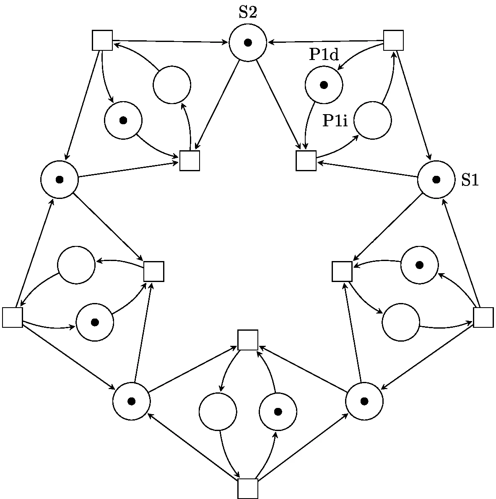
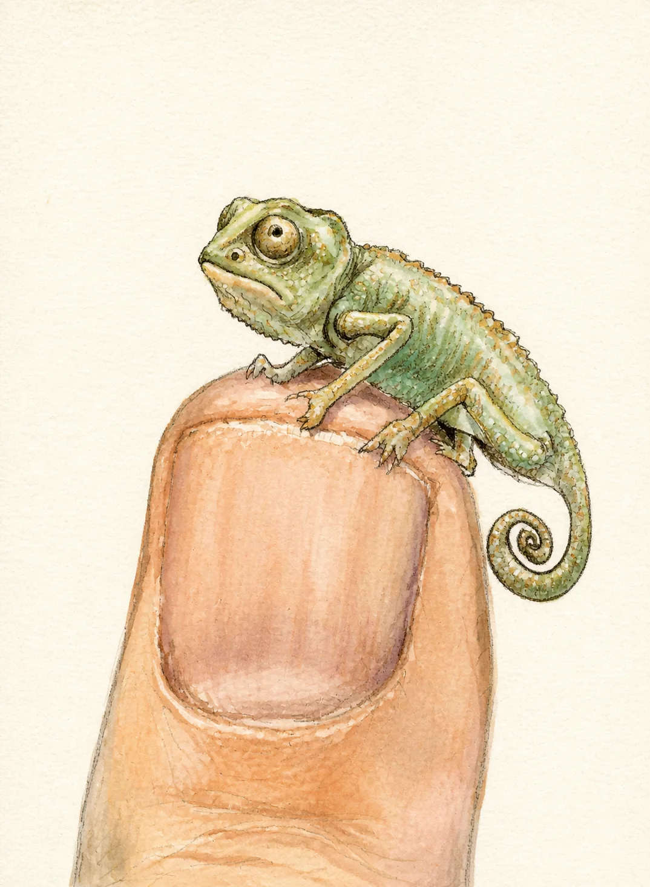
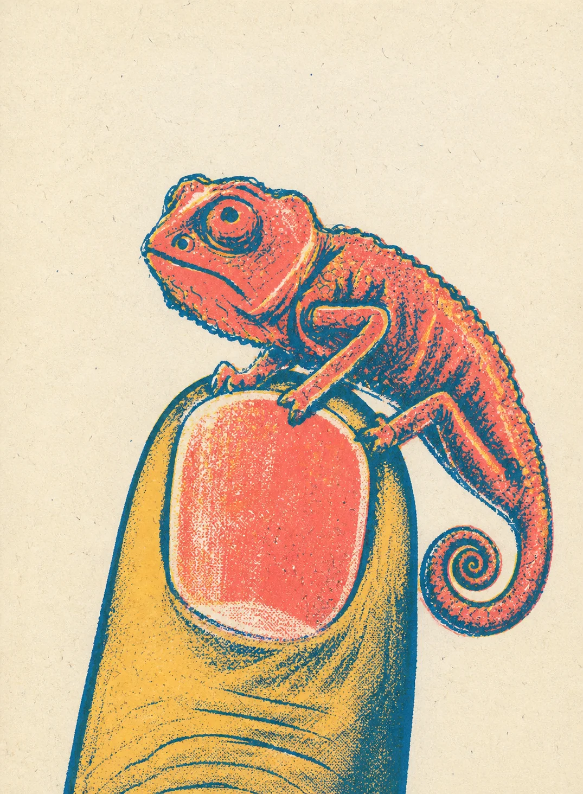
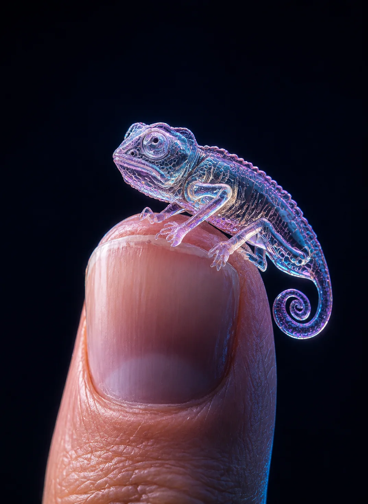

Fahrrad und Nussknacker habe ich nach visuellen Vorlagen in Adobe
Illustrator freihändig aufgebaut. Ebenen, Bézierkurven und 3D-Effekte
verbinden realistische Darstellung mit den fachlichen Markierungen
eines Mathematik-/Physik-Testlets.
Physik-Testlet · Aufgaben zu Kraft, Hebel und Beschleunigung
Fahrrad · Konstruktion, Bauteile und KraftvektorenNussknacker · 3D-Ausarbeitung und Hebelmodell
LaTeX · TikZ · Petri-Netze
Parametrische Fachgrafiken mit TikZ
Dieses Petri-Netz entsteht direkt aus LaTeX-/TikZ-Code. Positionen,
Umlaufbahnen, Knoten und Verbindungen werden über Koordinaten und Winkel
definiert und anschließend als saubere Vektorgrafik kompiliert.
Parametrische, skalierbare und reproduzierbare Fachgrafiken
Implementierung · Parametrische Platzierung und zyklische Verknüpfung mit Schleifen

Vektorausgabe · Symmetrisches Petri-Netz für fachliche Dokumentation
TikZ-Implementierung (Auszug)
\begin{tikzpicture}[
>=Stealth,
every place/.style={inner sep=0pt, outer sep=0pt},
every transition/.style={inner sep=0pt, outer sep=0pt}
]
\foreach \i/\angle in {1/270, 2/342, 3/54, 4/126, 5/198} {
\node[transition] (start-\i)
at ({2*cos(\angle)}, {2*sin(\angle)}) {};
\node[transition] (finish-\i)
at ({5*cos(\angle)}, {5*sin(\angle)}) {};
}
\foreach \i/\next in {1/2, 2/3, 3/4, 4/5, 5/1} {
\draw (active-\i) edge[post, bend right=15] (start-\i);
\draw (stick-\i) edge[post] (start-\next);
}
Eigene Handskizze · KI-gestützte Bildgestaltung
Vom Bleistift zum Bildstil
Ausgangspunkt ist meine handgezeichnete Bleistiftskizze eines Chamäleons
auf einem Finger. Pose, Blickrichtung, Silhouette und Bildaufbau wurden
als gestalterische Konstanten definiert; Material, Licht, Farbe und Medium
habe ich anschließend über präzise Prompts variiert.
Mein Beitrag
Eigene Skizze · Prompt Design · Art Direction · Auswahl
Stilkonsistenz bei erkennbar gleicher Bildidee demonstrieren
01Handskizze digitalisieren
02Motiv und Komposition sperren
03Stil, Licht und Material steuern
04Ergebnisse prüfen und auswählen
Original · HandskizzeKI · Fotorealistisch

KI · Aquarell

KI · Risograph

KI · 3D-Materialstudie
Beispiel für die Prompt-Logik
Input image: eigene Bleistiftskizze als Editierziel und Kompositionsreferenz.
Motiv-Lock: genau ein Chamäleon auf einem aufrechten Zeigefinger; Fingernagel frontal; Kopf nach links; eingerollter Schwanz rechts.
Stilsteuerung: Medium, Farbpalette, Material, Licht und Textur pro Variante verändern.
Konstanten: vertikaler Nahbeschnitt, Pose, Silhouette und Negativraum erhalten.
Ausschlüsse: keine Schulter, keine Kleidung, keine zusätzlichen Objekte oder Gliedmaßen, kein Text, kein Wasserzeichen.